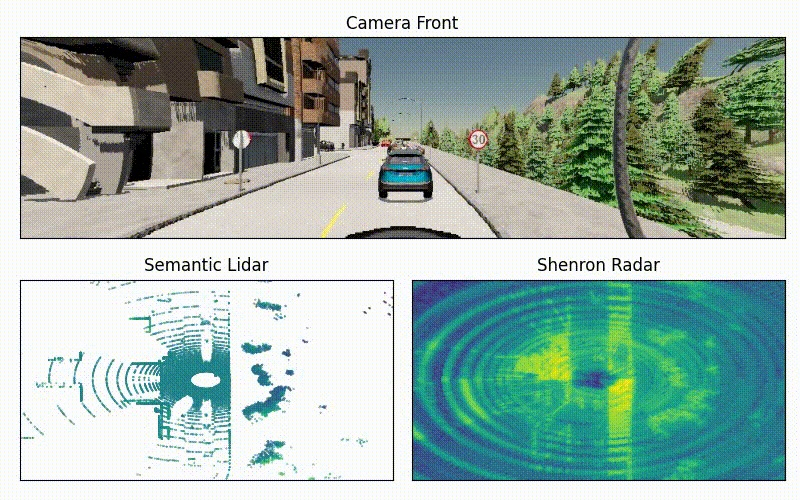

A Realistic Radar Simulator for End-to-End Autonomous Driving in CARLA
We present C-Shenron, a radar simulation framework integrated into CARLA that generates realistic radar measurements by fusing LiDAR and camera data. Our framework supports configurable radar parameters and demonstrates that radar-camera fusion models achieve performance equivalent to LiDAR-camera baselines on CARLA leaderboard metrics.